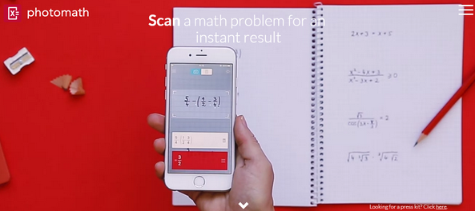

Dispositivos móviles
La notación es importante: photomath
Photomath es una aplicación que está disponible para dispositivos iOS y para Android. Como rezan en su página web, «escanea problemas matemáticos para un resultado instantáneo». Aunque eso de «problema» es más que discutible, ya que lo que resuelve es más bien lo que se conoce como ejercicios; esto es, expresiones aritméticas o algebraicas. Toda la cuestión de la matematización de un verdadero problema sigue siendo cosa de la persona que usa la app.

El funcionamiento es sencillo. Una vez instalada en el móvil, escaneamos una expresión aritmética o algebraica (una ecuación o un sistema, por ejemplo), la detectará (si está bien escrita) y la resolverá. Precisamente porque no sirve para resolver problemas auténticos, photomath puede tener un hueco en esos momentos donde queremos centrarnos en la matematización, la fase de mayor enjundia en la resolución de problemas.
Por otro lado, la notación, en sí misma, juega un papel muy importante en las matemáticas. No en vano, los desarrollos históricos han ido acompañados de una notación adecuada que, con el tiempo, se ha convertido en estándar. Esta app nos ayuda a promover el uso de una notación correcta, pues si el alumno no escribe bien la operación a realizar o la ecuación a resolver, photomath no lo sabrá interpretar.
No es algo a desdeñar esto de la notación. ¿Cuántas veces nos encontramos con alumnos que, en el desarrollo de una expresión de operaciones combinadas, van intercalando iguales con los resultados parciales?